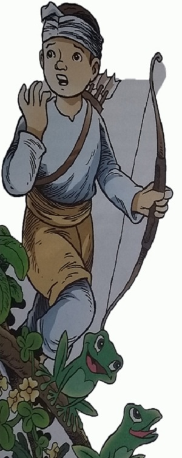
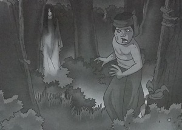

Suri Ikun dan Dua Burung
( Cerita Rakyat Nusa Tenggara Timur )
Alkisah, dahulu di Pulau Timor hiduplah sepasang suami-isteri petani dengan empat belas orang anaknya yang terdiri dari tujuh orang laki-laki dan tujuh orang perempuan. Walau mereka memiliki kebun yang luas, namun hasil dari kebun tersebut selalu tidak pernah cukup untuk memenuhi kebutuhan seluruh anggota keluarga. Hal ini bukan karena jumlah anggota keluarga yang terlalu banyak, melainkan karena tanaman ladang mereka sering dirusak oleh seekor babi hutan besar.
Untuk mengatasi gangguan babi hutan yang dianggap sebagai hama, sang petani menugaskan pada anak-anaknya yang laki-laki untuk bergiliran menjaga kebun. Namun, dari ketujuh orang anak laki-laki tersebut hanya Suri Ikun yang paling berani. Sedangkan saudara-saudaranya yang lain, baru mendengar suara dengusan sang babi hutan saja mereka langsung lari lintang pukang meninggalkan ladang.
Singkat cerita, suatu hari saat mendapat giliran menjaga kebun Suri Ikun berhasil memanah hewan itu hingga mati. Ia lalu membawanya ke rumah untuk dimasak. Sesampai di rumah, saudaranya yang paling tua diberi tanggung jawab oleh ayahnya untuk membagian daging hewan itu secara merata kepada seluruh anggota keluarga. Tetapi karena si sulung merasa iri dan dengki kepada Suri Ikun, maka ia hanya memberinya bagian kepada dari hewan itu yang sudah tentu tidak banyak dagingnya.
Tidak hanya itu, ia pun menyuruh Suri Ikun bersamanya mencari gerinda milik ayah meraka yang tertinggal di hutan. Waktu itu hari sudah menjelang malam. Dengan perasaan takut Suri Ikun berjalan mengikuti kakaknya. Di tengah perjalanan secara tidak sadar ia mengambil jalan yang berlainan arah. Makin lama ia pun makin masuk ke tengah hutan. Dan setelah tersadar, ia lalu memanggil-manggil kakaknya. Tetapi suara panggilan Suri Ikun bukan dijawab kakaknya melainkan oleh para hantu jahat yang berdiam di dalam hutan. Mereka sengaja menyesatkan Suri Ikun.
Tidak lama
kemudian, mereka menangkap Suri Ikun. Ia lalu di kurung dalam sebuah
gua yang gelap gulita. Hanya ada sebuah celah sempit tempat sinar
matahari dapat masuk. Dari celah tersebut Suri Ikun melihat ada dua
ekor anak burung yang sedang kelaparan. Ia lalu melemparkan
makanannya ke arah mereka. Lama-kelamaan kedua burung itu tumbuh
menjadi burung dewasa yang sangat besar dan kuat.
Dan sebagai ungkapan rasa terima kasih, kedua burung itu lalu membebaskan Suri Ikun dari sekapan para hantu. Tidak itu saja, secara gaib mereka lantas membuatkan sebuah istana yang lengkap dengan para pengawal dan pelayannya. Disanalah untuk selanjutnya Suri Ikun hidup berbahagia.